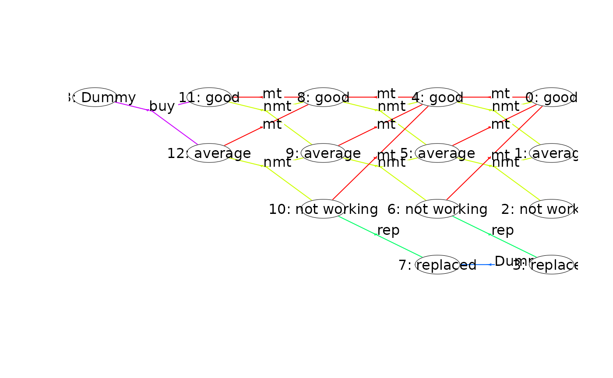
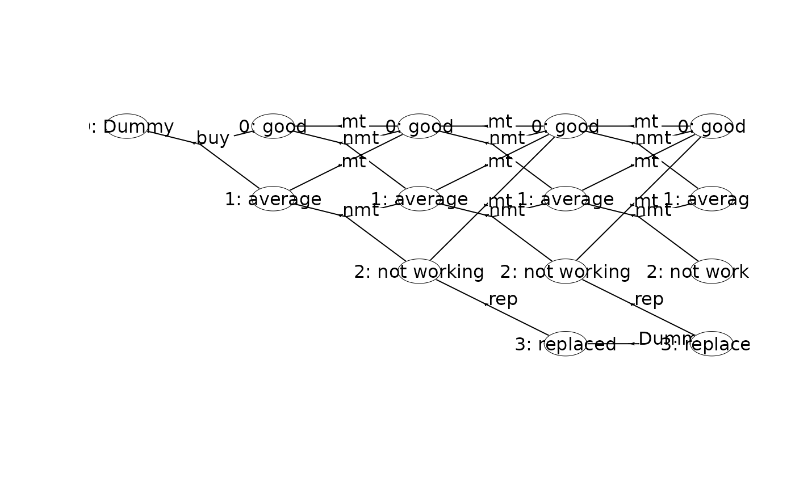
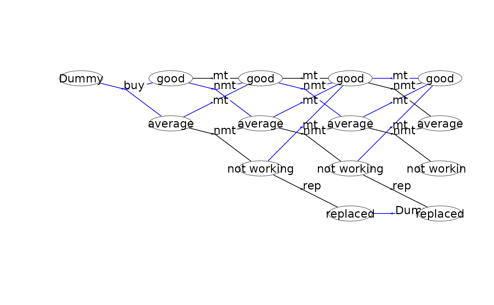
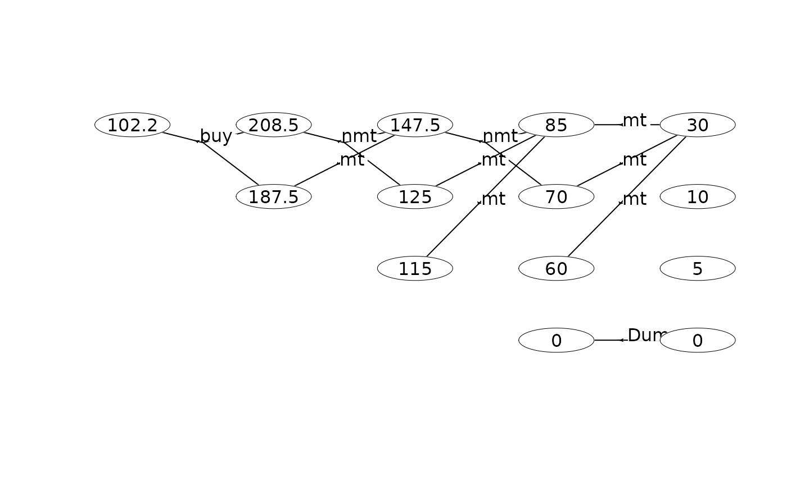
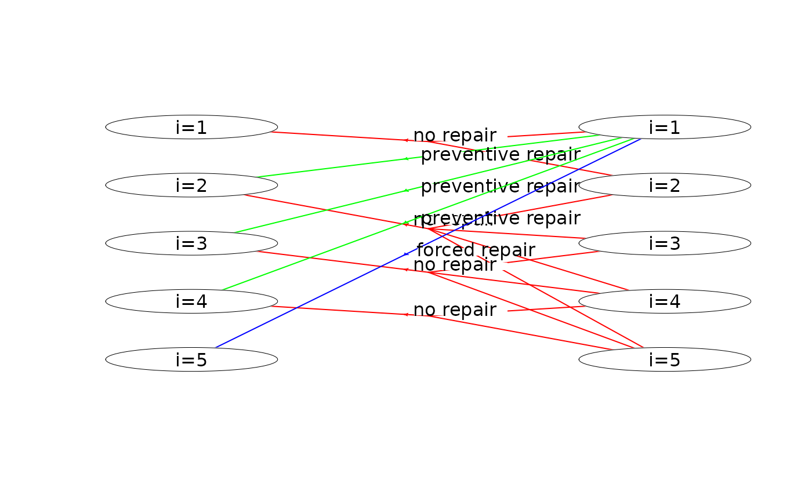
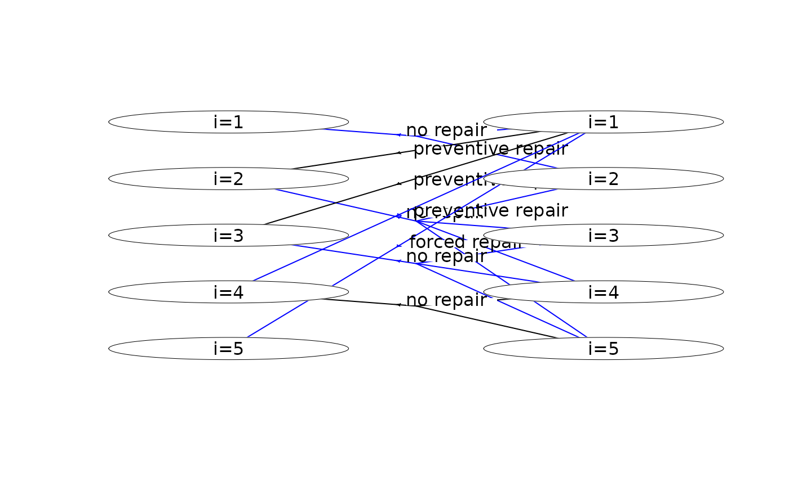
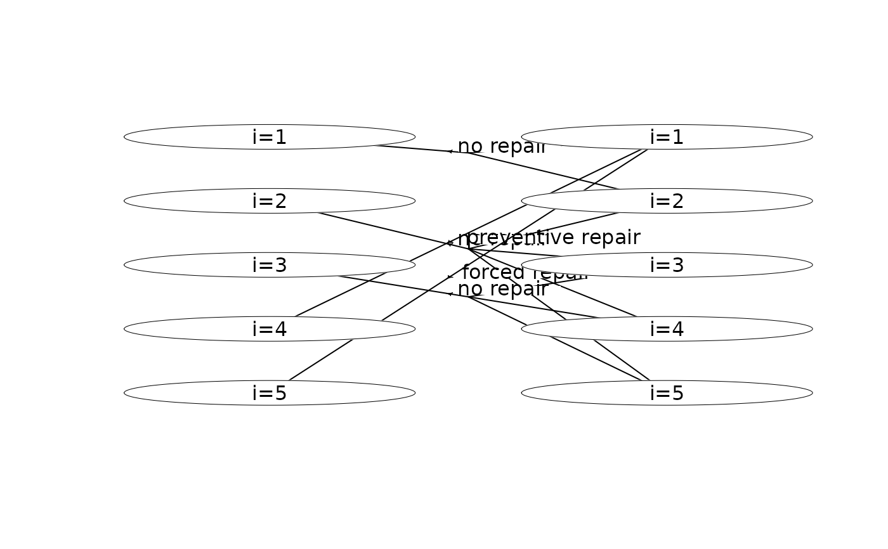

Plot the state-expanded hypergraph of the MDP.
Usage
# S3 method for class 'HMDP'
plot(x, ...)Arguments
- x
The MDP model.
- ...
Arguments passed to
plotHypergraph(). Moreover, you may usehyperarcColor: A string. If empty string no colors are used (default). Iflabelthen use different colors based on the hyperarc/action labels. Ifpolicythen use highlight the current policy.nodeLabel: A string. If empty string, then display node labels (default). IfsIdthen display the state ids. IfsId:labelthen display the state ids together with the label. IfsIdx:labelthen display the state index and the label. Ifweightthen display the node weight.hyperarcShowA string. Ifallthen show all hyperarcs (default). Ifpolicythen only show the current policy.
Examples
## Set working dir
wd <- setwd(system.file("models", package = "MDP2"))
#### A finite-horizon replacement problem ####
mdp<-loadMDP("machine1_")
#> Read binary files (9.5223e-05 sec.)
#> Build the HMDP (2.5598e-05 sec.)
#> Checking MDP and found no errors (7.71e-07 sec.)
plot(mdp)
 plot(mdp, hyperarcColor = "label") # colors based on labels
plot(mdp, hyperarcColor = "label") # colors based on labels
 plot(mdp, hyperarcColor = "label", nodeLabel = "sId:label") # node labels are 'sId: label'
plot(mdp, hyperarcColor = "label", nodeLabel = "sId:label") # node labels are 'sId: label'

plot(mdp, nodeLabel = "sIdx:label", radx = 0.02) # adjust radx in nodes

scrapValues <- c(30, 10, 5, 0) # scrap values (the values of the 4 states at stage 4)
runValueIte(mdp, "Net reward" , termValues = scrapValues)
#> Run value iteration with epsilon = 0 at most 1 time(s)
#> using quantity 'Net reward' under reward criterion.
#> Finished. Cpu time 7.711e-06 sec.
plot(mdp, hyperarcColor = "policy") # highlight optimal policy
#> Joining with `by = join_by(sId, aIdx)`

plot(mdp, hyperarcShow = "policy", nodeLabel = "weight") # show only optimal policy

#### An infinite-horizon maintenance problem ####
mdp<-loadMDP("hct611-1_")
#> Read binary files (9.7727e-05 sec.)
#> Build the HMDP (2.2624e-05 sec.)
#> Checking MDP and found no errors (1.002e-06 sec.)
plot(mdp) # plot the first two stages
 plot(mdp, hyperarcColor = "label") # colors based on labels
plot(mdp, hyperarcColor = "label") # colors based on labels

plot(mdp, hyperarcColor = "label", nodeLabel = "sId:label") # node labels are 'sId: label'
 runPolicyIteAve(mdp,"Net reward","Duration")
#> Run policy iteration under average reward criterion using
#> reward 'Net reward' over 'Duration'. Iterations (g):
#> 1 (-0.512821) 2 (-0.446154) 3 (-0.43379) 4 (-0.43379) finished. Cpu time: 1.002e-06 sec.
#> [1] -0.43379
plot(mdp, hyperarcColor = "policy") # highlight optimal policy
#> Joining with `by = join_by(sId, aIdx)`
runPolicyIteAve(mdp,"Net reward","Duration")
#> Run policy iteration under average reward criterion using
#> reward 'Net reward' over 'Duration'. Iterations (g):
#> 1 (-0.512821) 2 (-0.446154) 3 (-0.43379) 4 (-0.43379) finished. Cpu time: 1.002e-06 sec.
#> [1] -0.43379
plot(mdp, hyperarcColor = "policy") # highlight optimal policy
#> Joining with `by = join_by(sId, aIdx)`

plot(mdp, hyperarcShow = "policy") # show only optimal policy

#### An infinite-horizon hierarchical replacement problem ####
library(magrittr)
mdp<-loadMDP("cow_")
#> Read binary files (0.000162915 sec.)
#> Build the HMDP (0.000114592 sec.)
#> Checking MDP and found no errors (1.833e-06 sec.)
hgf <- getHypergraph(mdp)
# modify labels
dat <- hgf$nodes %>%
dplyr::mutate(label = dplyr::case_when(
label == "Low yield" ~ "L",
label == "Avg yield" ~ "A",
label == "High yield" ~ "H",
label == "Dummy" ~ "D",
label == "Bad genetic level" ~ "Bad",
label == "Avg genetic level" ~ "Avg",
label == "Good genetic level" ~ "Good",
TRUE ~ "Error"
))
# assign nodes to grid ids
dat$gId[1:3]<-85:87
dat$gId[43:45]<-1:3
getGId<-function(process,stage,state) {
if (process==0) start=18
if (process==1) start=22
if (process==2) start=26
return(start + 14 * stage + state)
}
idx<-43
for (process in 0:2)
for (stage in 0:4)
for (state in 0:2) {
if (stage==0 & state>0) break
idx<-idx-1
#cat(idx,process,stage,state,getGId(process,stage,state),"\n")
dat$gId[idx]<-getGId(process,stage,state)
}
hgf$nodes <- dat
# modify labels
dat <- hgf$hyperarcs %>%
dplyr::mutate(label = dplyr::case_when(
label == "Replace" ~ "R",
label == "Keep" ~ "K",
label == "Dummy" ~ "D",
TRUE ~ "Error"
),
col = dplyr::case_when(
label == "R" ~ "deepskyblue3",
label == "K" ~ "darkorange1",
label == "D" ~ "black",
TRUE ~ "Error"
),
lwd = 0.5,
label = ""
)
hgf$hyperarcs <- dat
# plot hypergraph
oldpar <- par(mai = c(0, 0, 0, 0))
plotHypergraph(gridDim = c(14, 7), hgf, cex = 0.8, radx = 0.02, rady = 0.03)
 par(oldpar)
## Reset working dir
setwd(wd)
par(oldpar)
## Reset working dir
setwd(wd)